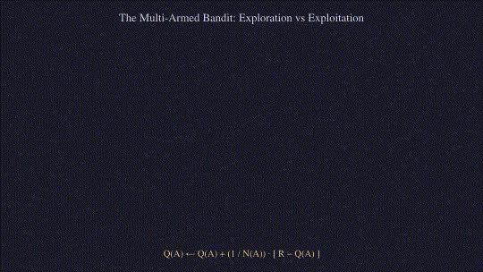

Which Candy Machine? Multi-Armed Bandits and Exploration
Season 1, Episode 01: Balancing immediate payoff against epistemic curiosity in stateless decision problems.
reinforcement-learning
bandits
exploration
python
first-principles
A first-principles exposition of k-armed bandits, incremental sample-average updates, Robbins-Monro convergence conditions, and non-stationary tracking.
NoteIn brief
In the inaugural episode, we explored tic-tac-toe to examine how delayed evaluative credit propagates across sequential state transitions. Before formalising general Markov Decision Processes, we isolate the fundamental engine of reinforcement learning: evaluative feedback in a stateless setting. This episode introduces the \(k\)-armed bandit problem—formalising the tension between exploiting known empirical payoff estimates and exploring uncertain alternatives, deriving incremental update rules, analysing the linear regret of \(\varepsilon\)-greedy selection, and establishing convergence criteria under both stationary and non-stationary distributions (Sutton and Barto 2018; Robbins and Monro 1951).
0.1 Episode Metadata
- Game: Candy machines (\(k\)-armed bandit)
- Source: Sutton & Barto, Reinforcement Learning: An Introduction (2nd ed.), Chapter 2, §2.1–2.5 (Sutton and Barto 2018)
- Series Index: RL from First Principles
The autumn fairground is a kaleidoscope of spinning lights, whirling carousels, and cheerful music. Grandpa Leo hands Ada a little velvet pouch containing shiny metal tokens. In a sheltered wooden booth stand three gleaming vintage candy dispensers: one painted red, one blue, and one green.
“Each pull costs exactly one token,” Grandpa Leo explains, leaning against the booth counter. “Each machine drops a handful of sweets. However, their mechanisms are somewhat erratic. Sometimes a dispenser yields a generous handful; other times it dispenses merely a few.”
Ada eagerly inserts her first token into the red machine. Two strawberry drops clatter into the tray. Next, she tests the blue dispenser. A delightful burst of five lemon sweets cascades down! Finally, she tries the green machine. A solitary mint drop emerges.
“Blue is the undisputed champion!” Ada exclaims with delight. She promptly drops another token into the blue lever. Three sweets clatter out. She inserts another token. Two sweets. Another token yields only one sweet.
“Hmm,” Grandpa Leo muses, adjusting his spectacles. “Was the blue dispenser genuinely superior, or was that initial five-sweet drop merely an exceptionally fortunate fluke?”
Ada pauses and wrinkles her nose. She retrieves a small paper napkin and a stubby crayon from her coat pocket. She sketches three neat columns: one for each colour. For every machine, she totals all the sweets dispensed and divides them evenly across the tokens spent on that dispenser—calculating the fair share of sweets earned per token.
She soon notices an intriguing tension. The more tokens she expends on a machine, the more reliably she characterises its typical payout. Yet, if she continues pouring every token exclusively into the blue dispenser, she will remain completely oblivious as to whether the red or green machine harbours a superior payout in the long run.
Ada devises a methodical rule: Most of the time, she pulls whichever machine currently boasts the highest average on her napkin. However, every few turns, she deliberately pulls a different dispenser at random, purely to satisfy her curiosity.
By late afternoon, her velvet pouch is overflowing. The green dispenser—which had begun so disappointingly with a single mint—gradually revealed itself to be the most bountiful machine of all, routinely dropping four to six sweets. Ada only discovered its true nature because she refused to let early luck dictate her decisions.
TipWhat Would You Do?
If one machine awards you a massive prize on your very first turn, would you ever consider pulling an alternative machine that previously gave you almost nothing? Why?
0.2 Isolating Evaluative Feedback
In Episode 00, tic-tac-toe required solving two coupled challenges simultaneously:
- Evaluative Feedback: Assessing how desirable a chosen action was without an explicit supervisory gradient.
- Delayed Credit Assignment: Propagating scalar terminal rewards backward through a directed sequence of board configurations.
To master reinforcement learning from first principles, we temporarily step back from sequential state transitions. The multi-armed bandit framework isolates pure evaluative feedback in a single, recurring decision context.

0.3 The Fundamental Dilemma
At each round \(t\): - Exploitation: Select the action whose estimated value is currently maximal to capitalise on acquired knowledge and secure immediate reward. - Exploration: Select non-greedy actions to reduce epistemic uncertainty, refine parameter estimates, and potentially uncover vastly superior alternatives.
Crucially, an agent can never exploit and explore simultaneously with a single action. Exploiting maximises immediate expected reward on the current step; exploring sacrifices instantaneous reward to acquire information that elevates future returns.
0.4 What to Notice in the Interactive Widgets
- The Greed Trap (\(\varepsilon = 0\)): A purely greedy agent locks irrevocably onto the first arm that produces an early positive fluctuation, often occluding the globally optimal arm forever.
- The Asymptotic Plateau (\(\varepsilon = 0.1\) vs \(\varepsilon = 0.01\)): A higher exploration rate (\(\varepsilon = 0.1\)) discovers the optimal arm rapidly, but plateaus below optimal performance because it continues wasting \(10\%\) of its actions on random choices. Conversely, \(\varepsilon = 0.01\) learns more conservatively but attains a higher asymptotic ceiling.
- Variance Shrinkage: As pull count \(N_t(a)\) grows, the empirical sample average stabilizes, corroborating the Weak Law of Large Numbers.
0.5 Try It: Ada’s Napkin
Play Ada’s afternoon yourself. Each machine drops a noisy handful of sweets around a hidden average; the napkin keeps the running average \(Q(a)\) and pull count \(N(a)\) for each. Pull by hand, or let Ada’s rule (\(\varepsilon\)-greedy with \(\varepsilon = 0.1\)) choose for you, then reveal the true averages.
0.6 Try It: The 10-Armed Testbed
The same comparison as Sutton & Barto’s Figure 2.2, simulated live in your browser. Each curve averages many independent 10-armed problems with \(q_*(a) \sim \mathcal{N}(0, 1)\) and rewards \(R_t \sim \mathcal{N}(q_*(A_t), 1)\). Switch on drifting machines to run Exercise 2.5, and compare the two step-size rules.
WarningCommon Misconception
Misconception: “The optimal decision is always to select the alternative that has delivered the highest average payoff so far.” Reality: The empirical average reflects only the history of observations obtained under an active sampling bias. An option with a modest initial sample mean might simply have suffered from unlucky stochastic variance. Without persistent exploration, empirical averages remain skewed.
0.7 Problem Formulation: The \(k\)-Armed Bandit
Consider a system comprising \(k\) discrete actions \(\mathcal{A} = \{1, 2, \dots, k\}\). At discrete time steps \(t \in \{1, 2, \dots, T\}\), the agent selects action \(A_t \in \mathcal{A}\) and receives a scalar reward \(R_t \in \mathbb{R}\) drawn from a stationary probability distribution \(\mathcal{D}_a\):
\[R_t \sim \mathcal{D}_{A_t}\]
The true value (expected payoff) of action \(a\) is denoted \(q_*(a)\):
\[q_*(a) \doteq \mathbb{E}[R_t \mid A_t = a]\]
The optimal action \(a^*\) and its corresponding maximal value \(\mu^*\) are defined as:
\[a^* \doteq \arg\max_{a \in \mathcal{A}} q_*(a), \qquad \mu^* \doteq q_*(a^*) = \max_{a \in \mathcal{A}} q_*(a)\]
For any suboptimal action \(a\), the suboptimality gap is defined as \(\Delta_a \doteq \mu^* - q_*(a)\).
The cumulative regret \(\mathcal{L}_T\) incurred over a horizon of \(T\) decision steps measures the expected performance deficit relative to an omniscient oracle:
\[\mathcal{L}_T \doteq T \mu^* - \mathbb{E}\left[ \sum_{t=1}^T R_t \right] = \sum_{a \in \mathcal{A}} \Delta_a \, \mathbb{E}[N_T(a)]\]
where \(N_T(a) \doteq \sum_{t=1}^T \mathbb{1}_{A_t = a}\) represents the cumulative allocation count to action \(a\).
0.8 Action-Value Estimation and the Incremental Update
Let \(Q_t(a)\) denote the agent’s internal estimate of \(q_*(a)\) immediately prior to round \(t\). Under the sample-average method, \(Q_t(a)\) is computed as the arithmetic mean of all rewards accumulated from arm \(a\):
\[Q_t(a) \doteq \frac{\sum_{i=1}^{t-1} R_i \, \mathbb{1}_{A_i = a}}{\sum_{i=1}^{t-1} \mathbb{1}_{A_i = a}} = \frac{\sum_{i=1}^{t-1} R_i \, \mathbb{1}_{A_i = a}}{N_t(a)}\]
Computing this summation naively would require unbounded memory \(\mathcal{O}(t)\). Instead, we derive the classic incremental update. Consider a single action arm that has been selected \(n-1\) times, yielding observed rewards \(R_1, R_2, \dots, R_{n-1}\). Upon receiving the \(n\)-th reward \(R_n\):
\[\begin{aligned} Q_{n+1} &= \frac{1}{n} \sum_{i=1}^n R_i \\ &= \frac{1}{n} \left( R_n + \sum_{i=1}^{n-1} R_i \right) \\ &= \frac{1}{n} \left( R_n + (n - 1) Q_n \right) \\ &= \frac{1}{n} \left( R_n + n Q_n - Q_n \right) \\ &= Q_n + \frac{1}{n} \big[ R_n - Q_n \big] \end{aligned}\]
This derivation exemplifies the quintessential operational paradigm across reinforcement learning:
\[\text{NewEstimate} \leftarrow \text{OldEstimate} + \text{StepSize} \, \big[ \text{Target} - \text{OldEstimate} \big]\]
where \([ \text{Target} - \text{OldEstimate} ]\) formalises the prediction error.
0.9 Action Selection Mechanisms
Greedy Selection: \[A_t = \arg\max_{a \in \mathcal{A}} Q_t(a)\] Ties must be broken uniformly at random to prevent systematic left-arm bias.
\(\varepsilon\)-Greedy Selection: With probability \(1 - \varepsilon\), select a greedy action. With probability \(\varepsilon\), sample an action uniformly at random from \(\mathcal{A}\):
\[\pi_t(a) = \begin{cases} 1 - \varepsilon + \frac{\varepsilon}{k}, & \text{if } a = \arg\max_{a'} Q_t(a') \\ \frac{\varepsilon}{k}, & \text{if } a \neq \arg\max_{a'} Q_t(a') \end{cases}\]
As \(t \to \infty\), every arm is sampled infinitely often (\(N_t(a) \to \infty\)), guaranteeing \(Q_t(a) \xrightarrow{\text{a.s.}} q_*(a)\) by the Strong Law of Large Numbers. However, because a constant fraction \(\varepsilon\) of all pulls remains uniformly exploratory, the cumulative regret scales linearly:
\[\mathcal{L}_T = \Omega(T)\]
0.10 Tracking Non-Stationary Environments
When reward distributions drift over time, earlier observations become progressively misleading. We replace the sample-average step size \(\frac{1}{n}\) with a constant learning rate \(\alpha \in (0, 1]\):
\[Q_{n+1} = Q_n + \alpha \big[ R_n - Q_n \big]\]
Expanding this recursion backwards reveals an exponential recency-weighted average:
\[\begin{aligned} Q_{n+1} &= \alpha R_n + (1 - \alpha) Q_n \\ &= \alpha R_n + (1 - \alpha) \big[ \alpha R_{n-1} + (1 - \alpha) Q_{n-1} \big] \\ &= \alpha R_n + \alpha (1 - \alpha) R_{n-1} + (1 - \alpha)^2 Q_{n-1} \\ &= (1 - \alpha)^n Q_1 + \sum_{i=1}^n \alpha (1 - \alpha)^{n-i} R_i \end{aligned}\]
The weight allocated to reward \(R_i\) decays geometrically with temporal recency \((1 - \alpha)^{n-i}\). Notice that the total weight distribution sums to unity:
\[(1 - \alpha)^n + \sum_{i=1}^n \alpha (1 - \alpha)^{n-i} = 1\]
0.11 Robbins-Monro Convergence Criteria
Under what conditions does a generic sequence of step-size parameters \(\{\alpha_n(a)\}\) guarantee almost sure convergence \(Q_n(a) \to q_*(a)\)? The stochastic approximation theory established by Robbins & Monro (Robbins and Monro 1951) dictates two mandatory conditions:
\[\sum_{n=1}^\infty \alpha_n(a) = \infty \qquad \text{and} \qquad \sum_{n=1}^\infty \alpha_n^2(a) < \infty\]
- Condition 1 (\(\sum \alpha_n = \infty\)): The step sizes must be sufficiently large to overcome any initial conditions or early stochastic fluctuations.
- Condition 2 (\(\sum \alpha_n^2 < \infty\)): The step sizes must attenuate fast enough to extinguish residual variance and guarantee convergence to a stationary point.
- Sample Mean (\(\alpha_n = 1/n\)): \(\sum \frac{1}{n} = \infty\) (harmonic series diverges) and \(\sum \frac{1}{n^2} = \frac{\pi^2}{6} < \infty\). Both conditions are fulfilled; estimates converge asymptotically.
- Constant Step-Size (\(\alpha_n = \alpha\)): \(\sum \alpha = \infty\), but \(\sum \alpha^2 = \infty\). The second condition fails; estimates maintain persistent responsiveness to track non-stationary changes.
0.12 Vectorised NumPy Implementation
Below is a complete, vectorised Python implementation reproducing Sutton & Barto’s 10-armed bandit testbed (§2.3) with rigorous random tie-breaking.
import numpy as np
import matplotlib.pyplot as plt
def run_bandit_experiment(
n_arms: int = 10,
n_steps: int = 1000,
n_runs: int = 2000,
epsilons: list[float] = [0.0, 0.01, 0.1],
alpha: float | None = None
) -> tuple[dict[float, np.ndarray], dict[float, np.ndarray]]:
"""
Vectorised simulation of the k-armed bandit testbed across multiple runs.
"""
results_reward = {}
results_optimal = {}
for eps in epsilons:
# Initialise true values: q_*(a) ~ N(0, 1) per run
q_true = np.random.normal(0.0, 1.0, size=(n_runs, n_arms))
optimal_arms = np.argmax(q_true, axis=1)
# Value estimates Q and pull counts N
Q = np.zeros((n_runs, n_arms))
N = np.zeros((n_runs, n_arms), dtype=int)
rewards_history = np.zeros((n_runs, n_steps))
optimal_action_history = np.zeros((n_runs, n_steps))
for t in range(n_steps):
# Epsilon-greedy action selection
explore_mask = np.random.uniform(0.0, 1.0, size=n_runs) < eps
random_actions = np.random.randint(0, n_arms, size=n_runs)
# Greedy actions with uniform random tie-breaking
# Adding infinitesimal jitter guarantees unbiased tie-breaking
jitter = np.random.uniform(0.0, 1e-9, size=Q.shape)
greedy_actions = np.argmax(Q + jitter, axis=1)
actions = np.where(explore_mask, random_actions, greedy_actions)
# Sample observed scalar reward: R ~ N(q_*(A), 1.0)
run_indices = np.arange(n_runs)
rewards = np.random.normal(q_true[run_indices, actions], 1.0)
# Update pull counts
N[run_indices, actions] += 1
# Update action-value estimates
if alpha is None:
step_sizes = 1.0 / N[run_indices, actions]
else:
step_sizes = alpha
Q[run_indices, actions] += step_sizes * (rewards - Q[run_indices, actions])
# Record metrics
rewards_history[:, t] = rewards
optimal_action_history[:, t] = (actions == optimal_arms)
results_reward[eps] = np.mean(rewards_history, axis=0)
results_optimal[eps] = np.mean(optimal_action_history, axis=0) * 100.0
return results_reward, results_optimal
NoteProgramming Exercise: Non-Stationary Drift (Exercise 2.5)
Modify the testbed so all true action values start equal at \(q_0(a) = 0\) and drift at each step via independent zero-mean Gaussian random walks: \[q_{t+1}(a) = q_t(a) + \eta_t(a), \qquad \eta_t(a) \sim \mathcal{N}(0, 0.01^2)\] Compare the empirical average return of the sample-average method (\(\alpha = 1/n\)) against the constant step-size method (\(\alpha = 0.1\)). Observe how the sample-average freezes while constant \(\alpha\) reliably tracks the shifting optimum.
NoteGame Theory Corner
In a stationary multi-armed bandit, the environment is passive: pulling an arm does not alter its underlying reward distribution. What happens, however, when the candy machine actively observes your choices and redistributes its payouts to minimise your score? This competitive dynamic transforms the bandit into a zero-sum matrix game (e.g. matching pennies or rock-paper-scissors), where deterministic pure strategies are perpetually exploitable and optimal play necessitates randomised mixed strategies. We will explore this formal transition in our parallel game theory series.
0.13 Key Takeaways & Glossary
| Symbol / Concept | Formal Definition | Operational Significance |
|---|---|---|
| \(q_*(a)\) | \(\mathbb{E}[R_t \mid A_t = a]\) | Ground-truth expected return of action \(a\). |
| \(Q_t(a)\) | \(\frac{\sum_{i=1}^{t-1} R_i \mathbb{1}_{A_i = a}}{N_t(a)}\) | Current empirical action-value estimate prior to round \(t\). |
| \(N_t(a)\) | \(\sum_{i=1}^{t-1} \mathbb{1}_{A_i = a}\) | Total allocation count to action \(a\) up to time \(t\). |
| \(\Delta_a\) | \(\mu^* - q_*(a)\) | Suboptimality gap between optimal arm and action \(a\). |
| \(\mathcal{L}_T\) | \(\sum_{a} \Delta_a \mathbb{E}[N_T(a)]\) | Cumulative expected regret after \(T\) decision steps. |
| Robbins-Monro | \(\sum \alpha_n = \infty\), \(\sum \alpha_n^2 < \infty\) | Necessary & sufficient criteria for almost-sure parameter convergence. |
0.14 What Comes Next?
While \(\varepsilon\)-greedy action selection guarantees asymptotic exploration, its randomised choices are indiscriminate: it explores promising and dismal alternatives with equal likelihood. In Season 1, Episode 02: Curious, but Clever (upcoming), we formulate guided, directed exploration mechanisms: - Optimism in the Face of Uncertainty: Initial value biases that encourage transient, self-terminating exploration. - Upper Confidence Bound (UCB): Quantifying epistemic uncertainty via concentration bounds to attain logarithmic regret \(\mathcal{O}(\log T)\). - Gradient Bandits: Learning continuous action preference probabilities through softmax stochastic gradient ascent.
References
Robbins, Herbert, and Sutton Monro. 1951. “A Stochastic Approximation Method.” The Annals of Mathematical Statistics 22 (3): 400–407. https://doi.org/10.1214/aoms/1177729586.
Sutton, Richard S., and Andrew G. Barto. 2018. Reinforcement Learning: An Introduction. 2nd ed. MIT Press. http://incompleteideas.net/book/the-book-2nd.html.